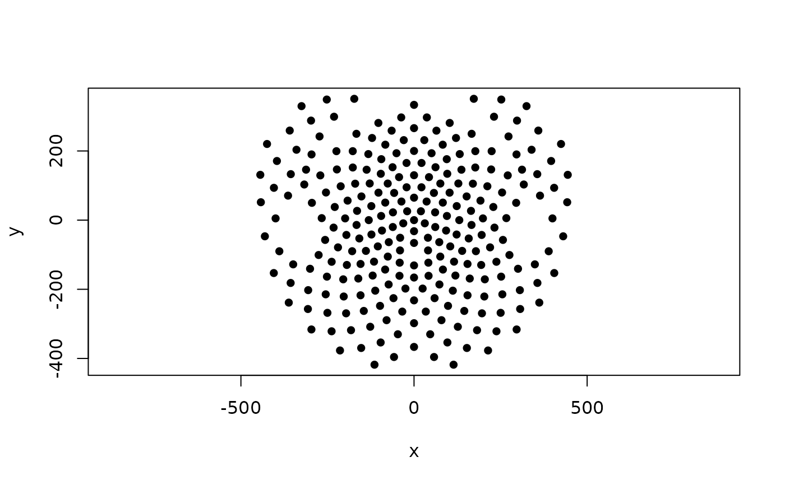

Coordinates of 256-channel HCGSN sensors
HCGSN256.RdA file containing the Cartesian coordinates of high-density EEG sensor positions in 3D space on the scalp surface and their positions in 2D space. The coordinates belong to 256-channel HydroCel Geodesic Sensor Net (GSN) average template montage. This template contains 257 electrode positions (including reference).
Usage
data("HCGSN256")Format
A list with following elements:
- D2
A tibble with 3 columns containing x and y coordinates and sensor labels (according to EGI GSN Technical Manual) in 2D.
- D3
A tibble with 4 columns containing x, y and z coordinates and sensor labels in 3D. See 'Details' for more information.
- ROI
Factor containing the name of the region to which the corresponding sensor belongs. The levels are: "central", "frontal", "occipital", "parietal", "temporal" and "face" for electrodes from the face area.
Details
The axis orientation in the 3D case is as follows:
x-axis: left (-) to right (+),
y-axis: posterior (-) to anterior (+),
z-axis: inferior (-) to superior (+). The reference electrode (Cz) is fixed at point (0, 0, Z), where Z is the positive height of Cz. The nasion is fixed at (0, Y, Z). Since both the nasion and Cz are always fixed at x = 0, they are assumed to be in the same y plane. The origin is the center of the head, defined as the center of a sphere fit to fiducial points above the plane made up of the Left Preauricular Point (LPA), the Right Preauricular Point (RPA), and the nasion.
The 2D coordinates were created by EGI team by positioning the channels to maximize use of screen space and to preserve the head shape as much as possible.
The regions in ROI were determined by an expert from Central European Institute of Technology, Masaryk University, Brno, Czech Republic.
References
EGI Geodesic Sensor Net Technical Manual (2024), https://www.egi.com/knowledge-center
Examples
# A simple plot of sensor coordinates from HCGSN256 template as points in 2D
plot(HCGSN256$D2[,1:2], pch = 16, asp = 1)
